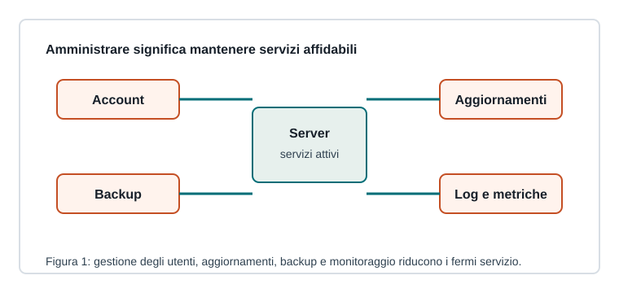

Capitoletto 4.2
Amministrazione dei sistemi in rete
Amministrare un sistema significa mantenerlo utile, sicuro e disponibile nel tempo, non solo “farlo partire”.

Account, gruppi e permessi
Gli utenti devono avere solo i privilegi necessari. Gruppi e ruoli rendono più semplice assegnare permessi a cartelle, servizi e strumenti di amministrazione.
Gli account amministrativi vanno separati dagli account ordinari e protetti con password robuste o autenticazione a più fattori dove disponibile.
Aggiornamenti e configurazioni
Patch di sicurezza, aggiornamenti software e configurazioni coerenti riducono vulnerabilità e malfunzionamenti. Prima di modificare un servizio importante bisogna sapere come tornare alla configurazione precedente.
| Attività | Scopo |
|---|---|
| Inventario | sapere quali sistemi esistono |
| Aggiornamenti | correggere bug e vulnerabilità |
| Backup configurazioni | ripristinare rapidamente |
| Registro modifiche | capire che cosa è cambiato |
Log e monitoraggio
I log registrano eventi come accessi, errori, riavvii e blocchi. Il monitoraggio misura lo stato del sistema: disponibilità, CPU, RAM, disco, rete e tempi di risposta.
Un allarme utile deve essere comprensibile e azionabile: “disco al 95%” è molto meglio di “server lento”.
Backup e ripristino
Un backup vale solo se può essere ripristinato. Bisogna definire frequenza, conservazione, luogo di archiviazione e prove periodiche di recupero.
Per servizi importanti servono copie separate, una procedura scritta e un test di ripristino eseguito prima dell'emergenza.
Ripasso
Perché documentare le modifiche?
Per capire cause di problemi, ripetere configurazioni corrette e ripristinare rapidamente.
Quando un backup è davvero utile?
Quando è recente, integro, protetto e già provato con un ripristino.